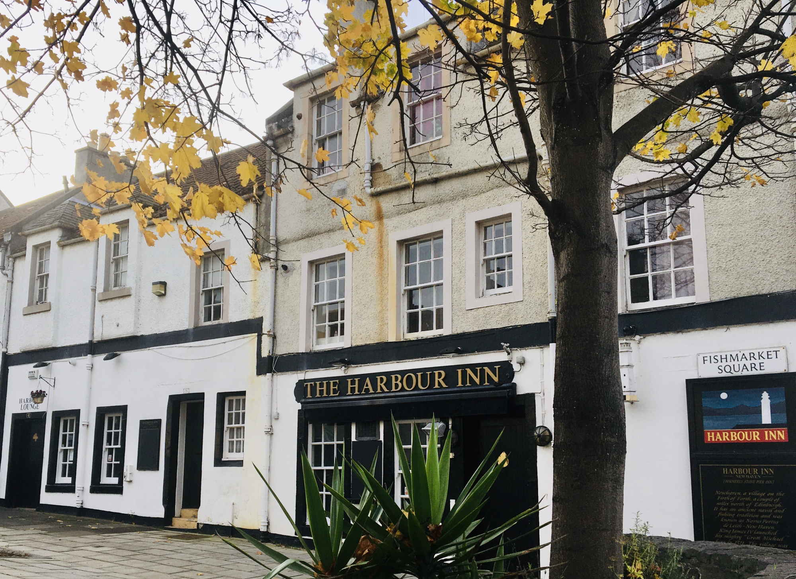
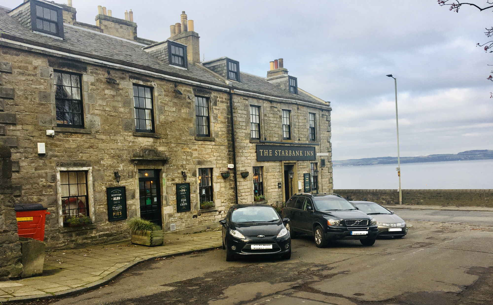

YOUR MOVE
The path between Granton Harbour and Newhaven where the walk can start
Newhaven Harbour with restaurants where the the walk can finish or stop for the while
Railings around the lighthouse decorated with hundreds of padlocks

'The Harbour Inn' pub with a beautiful view of the Newhaven Harbour
If you have ever wanted to see old harbou and discover something truly amazing, then I would say that Newhaven is your spot.
Newhaven Harbour is not only one place, but it is also a great area with lovely pubs, restaurants and sports facilities.
From Granton Harbour along the waterfront is the cycling and walking path with a great view on the sea sitting on the benches than passing or visiting pubs
like Old Chain Pier and The Starbank Inn.
For people who like a different kind of activity, the is Alien Rock climbing wall settled at old church.
Now on the way is Light House with view on all the shoreline than passing sports centre and walk the path along with modern residential buildings when behind them is a perfect place for a picnic where is the viewpoint for Leith Harbour, Chancelot Mill and Ocean Terminal shopping centre. On the backway to Newhaven Harbour is The Fish Market which is one of the most famous restaurants around the shore with delicious fish dishes.
In the end, it is very well to get to all parts of Edinburgh due to plenty of buses and tram connection soon.
'Old Chain Pier' Pub and Restaurant

'The Starbank Inn' pub with a beautiful view of the bay